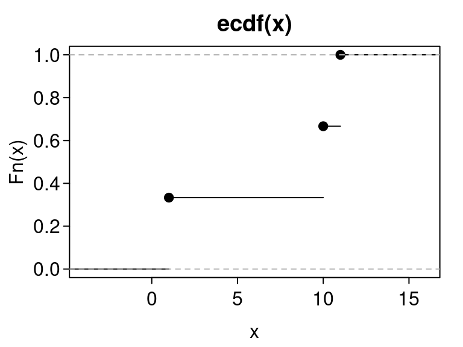

Final Project Description
David Gerard
2022-01-12
- Summary
- Grading Criteria
- Grade breakdown
- Project Topics
- Statistics Project: Confidence Intervals when \(n = 1\)
- Statistics Project: Piecewise Linear Density Functions
- Graphical Project: Empirical Distribution Function Plots
- Data Project: The On-Line Encyclopedia of Integer Sequences
- Object Oriented Programming Project: Small Groups
- Data Download Project: Marvel API
- References
Summary
You will work in teams of three or four to build an R package using some of the tools we have learned during this course.
Grading Criteria
- Generic functions used.
- Iteration used.
- C++ functions used.
- Unit testing implemented.
- Coverage > 70%
- Continuous integration
- No notes/warnings/errors
- Assertions
- Your functions throw errors at improper inputs.
Grade breakdown
- Project selection: 1 pt
- Progress report: 5 pts
- Presentation: 5 pts
- R Package: 10 pts
Project Topics
Below are some possible topics (each one can only be implemented by one group).
I think each of these could potentially be submitted to CRAN, if enough work has been put into them. This would look great on your resume.
I’ll update this page as I gain more ideas.
Statistics Project: Confidence Intervals when \(n = 1\)
Wall, Boen, and Tweedie (2001) provide an approach to calculate a finite confidence interval for the mean of a normal distribution when \(n=1\). Specifically, if \(x \sim N(\mu, \sigma^2)\), then the confidence interval is of the form: \[ \mu \in x \pm \xi|x|, \] for some \(\xi > 0\). This work extends the approaches from Blachman and Machol (1987).
For this project, I would like you to create an R package called
{noner}(N is One in R) for computing confidence intervals for means when the sample size is 1. The details I have in mind are below.
- Wall, Boen, and Tweedie (2001) list a couple ways to derive \(\xi\) (through either numerically solving an equation, or through closed-form approximations). Implement all of these methods.
- Your function should allow the user to choose the coverage probability.
- You can arbitrarily shift \(x\) by some constant \(a\) and obtain \(x-a \sim N(\mu - a, \sigma^2)\). So another confidence interval would be \[ \mu \in x-a \pm \xi|x-a| \] So allow the user to choose \(a\).
- Use the confidence interval to obtain a \(p\)-value against some null.
- Create a function to calculate the power of your test under various alternatives.
- Bayesian credible intervals for \(n=1\) are pretty easy to obtain using conjugate priors. Implement Bayesian credible intervals for \(n=1\) (you’ll have to learn a little bit about Bayesian inference for this).
- Possibly allow the user to place a distribution over \(a\). This is not quite the same as a full Bayesian approach, so I would be interested in exploring the results of this hybrid approach.
- Implement simulation scripts in a vignette comparing various approaches to calculate a confidence interval when \(n=1\).
- Wall, Boen, and Tweedie (2001) also describe confidence intervals of a similar form when \(n > 1\), but are sub-optimal when \(n > 2\). Implement these approaches and have a vignette comparing it to the standard \(t\)-intervals.
- Also calculate confidence interval for success probability of a binomial distribution when \(n=1\). There are tons of ways to do this, so you will have to explore the literature to implement the various approaches.
Statistics Project: Piecewise Linear Density Functions
A density function characterizes the distribution of a continuous variable. You are most familiar with the normal density.
The goal of this project is to create a package, called
{pldenr}, that will return the density, distribution function, quantile function, and random generation for any density that is piecewise linear.The arguments for these functions can be
- The endpoints of the lines and
- The relative height of the lines.
E.g. the user could input
endpoints = c(0, 0.5)andrelheight = c(1, 2)to indicate that the height of the line at 0.5 should be twice as high as the height of the line at 0.Some user inputs will be incompatable with any density, and your function should throw an error in such a case.
The function then scales the heights so that the area under the curve sums to 1. This shouldn’t be too hard since the area under a line is the area of a trapezoid.
You can include some default probability distributions (uniform, linear, triangular, etc).
To simulate, simulate from the [0, 1] uniform distribution then apply the quantile function to the resulting simulated values.
Advanced Work:
- Allow for discontinuities.
- Given endpoints for the lines, estimate the density given a sample of points (very hard unless you are familiar with stat theory).
- Piecewise quadratic/cubic densities.
Graphical Project: Empirical Distribution Function Plots
Create a package called
{ggedf}(‘ggplot2’ for Empirical Distribution Functions) that creates geoms for visualizing the empirical distribution function. Namely.Let \(X_1,X_2,\ldots,X_n\) be a set of numerical observations. Assume that these values are ordered. The empirical distribution function \(F(x)\) is defined to be the proportion of \(X_i\) values less than or equal to \(x\). You can obtain this in R via the
stats::ecdf()function.The typical plot for the EDF is a step-function plot, via
stats::plot.stepfun()x <- c(1, 10, 11) eout <- ecdf(x) plot(eout, mar = c(3, 3, 2, 1), mgp = c(1.8, 0.4, 0), las = 1, tcl = -.25) There are many alternatives to this plot.
Cumulative Percentage Polygons (Dixon and Massey 1983): These just connect the the points of \((X_i, \frac{i}{n})\)
Mountain Plots (Monti 1995): Same as cumulative percentage polygons, but they decrease from 0.5 to 1 and have a separate scale on the right-hand-side.
\(p\)-Mountain Plots (Xue and Titterington 2011): to fold along any quantile (not just the median).
- It was also shown in Xue and Titterington (2011) that the area under the curve in a mountain plot is the mean absolute deviation, so you could show this on the mountain plots.
Percentile Summary Graphs (Cleveland 1994): This is a scatterplot of \((\frac{i}{n}, X_i)\) with horizontal lines indicating the quantiles (like in a boxplot).
Quantile Graphs (Chambers et al. 2018): This is a line plot using the one of the continuous definitions of quantiles when between two points. E.g. see the 9 different types of quantiles in the help file of
stats::quantile().- I can imagine interpolating via splines, see
stats::splinefun()
- I can imagine interpolating via splines, see
You could also come up with other plots and summary statistics describing the EDF (either from the literature or on your own).
Your geoms should also be able to plot point-wise and simultaneous confidence intervals for the cumulative distribution function from the EDF. See https://en.wikipedia.org/wiki/CDF-based_nonparametric_confidence_interval
You might want to look at this reference for building new geoms:
Data Project: The On-Line Encyclopedia of Integer Sequences
Create a data package for the OEIS.
Your R package can include the whole OEIS, downloaded from here: https://oeis.org/stripped.gz
But adding a large dataset to a package is easy. The hard part will be to develop helper-functions for this project.
A function to search for sequences that match the first few numbers in a sequence.
A function to plot the sequence.
A function to plot pairs of sequences.
A function to open the OEIS webpage on the sequence.
A function to download the OEIS webpage, parse it using
{rvest}, and obtain the references, various links, etc…A function to create a musical representation of the sequence (using the
{audio}package).Other ideas you have.
The OEIS does not seem to have a well-documented API, so I imagine it would be much harder to create a direct interface with the OEIS than to just download the data and create a package yourself.
Object Oriented Programming Project: Small Groups
A binary operator is an operation that combines two elements to create a third element. E.g. \(+\) is a binary operator for numbers, we can “combine” 1 and 2 to make 3 via \(1 + 2 = 3\)
A group is a space (denoted \(G\)) of elements along with a binary operator (denoted “\(\cdot\)”) such that
- Associativity: for all \(a,b,c\in G\) we have \[ (a \cdot b) \cdot c = a \cdot (b \cdot c) \]
- Identity: There exists an \(e\in G\) such that \[ e \cdot a = a \cdot e = a \] for all \(a \in G\).
- Inverse: For all \(a \in G\) there exists a \(b \in G\) such that \[ a \cdot b = b \cdot a = e \] We usually denote \(b = a^{-1}\).
Groups are fundamental to the building blocks of much of theoretical mathematics.
Wikipedia provides a list of small groups: https://en.wikipedia.org/wiki/List_of_small_groups
Project: Create an S4 object oriented system for some of the small groups from the Wikipedia page on small groups. This should be implemented in a package called
{sgroupr}(Small Groups in R).E.g. Suppose that
as.g_4_2()converts a numeric vector into a vector encoding the Klein 4-group, and we define+to be the binary operator (which you would need to overload). Then I am envisioning code of the formx <- as.g_4_2(c(1, 2, 3, 4)) x + 1# 1 # 2 # 3 # 4x + 2# 2 # 1 # 4 # 3x + 3# 3 # 4 # 1 # 2x + 4# 4 # 3 # 2 # 1A good S4 object system that implements binary operations that you can explore is
{lubridate}.- E.g. they add
durations together in a special way.
- E.g. they add
Data Download Project: Marvel API
Description: Use the
{httr}package to build an R package called{marvalr}to interface to the Marvel Comic’s API: https://developer.marvel.com/I would only recommend this project if you are familiar with the
{httr}package: https://data-science-master.github.io/lectures/08_web_scraping/08_apis.htmlYou should create R functions that translate into HTTP queries through
{httr}.You should follow best practices for API packages as detailed by the
{httr}vignette: https://httr.r-lib.org/articles/api-packages.htmlYour functions should return to the user results in the form of a tidy data frame.
I would recommend looking at examples from the
{tidycensus}packageThe API has endpoints for comics, comic series, comic stories, comic events and crossovers, creators, and characters. I would recommend creating a function for each of these endpoints.
For this project, you can try other API’s (https://github.com/public-apis/public-apis). I just thought this one looked well-documented and fun.
References

This work is licensed under a Creative Commons Attribution-NonCommercial 4.0 International License.